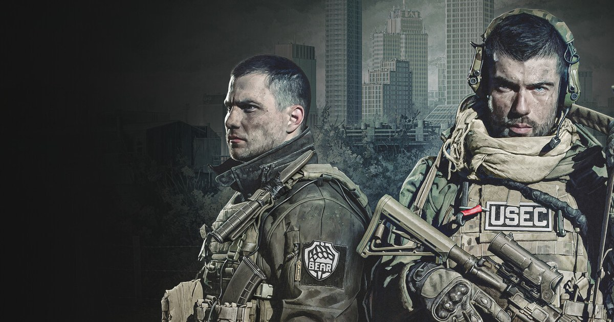

Escape from Tarkov just made its biggest technical jump yet — Unity 6 is live in patch 1.3.5.0
Battlestate Games is rolling out Escape from Tarkov patch 1.3.5.0 today, moving the extraction shooter to Unity 6 with a new RenderStack graphics platform, faster raid loading, and a reworked reconnect system.

Disclosure: this post contains affiliate links. I earn a commission on qualifying purchases.
Escape from Tarkov's long-awaited engine upgrade is finally here. Battlestate Games began rolling out patch 1.3.5.0 on Tuesday, November 24, moving the extraction shooter to Unity 6 — the technical overhaul the studio has been building toward since it laid out the plan in a developer diary last week.
This is not a content patch. There are no new maps, no new weapons, no new season. What 1.3.5.0 does is rebuild the ground the game stands on, and the studio is blunt about why that matters: the Unity 6 move unlocks the tools it needs for the bigger upgrades still to come.
What Unity 6 actually changes
The headline is the engine itself. Tarkov has run on an older Unity build for years, and porting a game this dense — with its ballistics, its loot economy, its raid-by-raid persistence — is the kind of job that takes months of manual work. Battlestate said its engineers profiled and reworked key internal systems alongside the port, and players should notice the difference in performance right away: faster loading into and out of raids, better server performance, and more accurate hit registration.
The loading change is architectural, not cosmetic. Resource loading has been rebuilt so the game no longer loads the location first and connects to the server second — the two now happen in parallel. That is the kind of fix that sounds boring and feels enormous the tenth time you are staring at a loading screen.
RenderStack and the reconnect fix
Alongside the engine move, the patch introduces RenderStack, a unified platform for the game's graphics systems and visual effects. It consolidates how vegetation, lighting, optics, and upscaling are handled, with reworked grass rendering and distant projection for trees and bushes, plus smoother transitions between lighting conditions and interior and distant shadows. The point is not just prettier trees — it is one system doing the work that used to be spread across several, which is what makes future visual upgrades feasible at all.
The other change players will feel immediately is the reworked raid reconnect. If you drop from a raid because of a server or network issue, the game now brings you back faster and more reliably — and once the connection is restored, it no longer has to reload the resources or the world state. That only covers network drops, not crashes or operating-system issues, but for a game where a disconnect can cost you an entire kit, a faster way back in is a real quality-of-life win.
What is not in this patch
Battlestate was careful to draw the line between what Unity 6 enables and what it delivers today. DirectX 12, AMD FSR 4.0, and NVIDIA DLSS Frame Generation are all possible now because of the engine move, but none of them ships in 1.3.5.0 — they are planned for upcoming updates, with FSR 4 support targeted before the end of the year. The vegetation visual rework the studio mentioned in August has also been postponed to a later update.
The patch does close out the Halloween event, but it does not bring the winter weather players have been expecting. That is likely to arrive in a couple of weeks, when the game's second season lands with UNTAR Control.
Why now
The timing is no accident. Tarkov's full launch on Steam landed just over a year ago, on November 15, 2025, and the game has spent the year since building out its post-launch seasons. An engine migration is the kind of work a studio does when it is planning to be around for a while — it is expensive, invisible to anyone who only looks at patch notes, and it is what makes everything after it possible. Patch 1.3.5.0 is Battlestate saying the next phase of Tarkov is being built on new foundations.
Sources: Escape from Tarkov's Massive Unity 6 Upgrade is Finally Here (Insider Gaming) · Escape from Tarkov Gets Its Long-Awaited Unity 6 Upgrade in Patch 1.3.5.0 (VGTimes) · Escape From Tarkov Patch 1.3.5.0 Introduces Unity 6, RenderStack, and Faster Raid Reconnects (Twisted Voxel) · Escape from Tarkov — Developer's diary: Technical improvements (Battlestate Games via Steam)
Gear up: Razer — mice, keyboards, headsets and laptops.